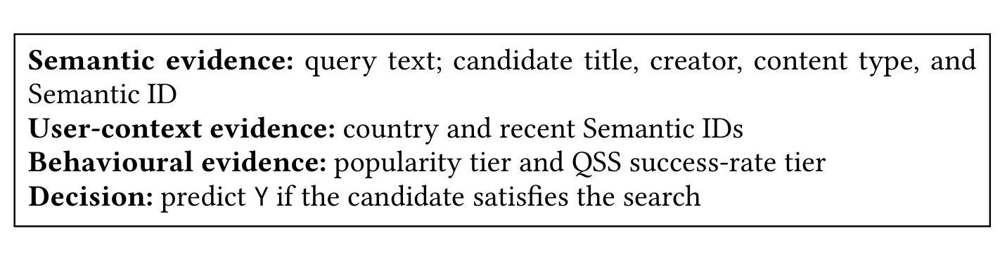
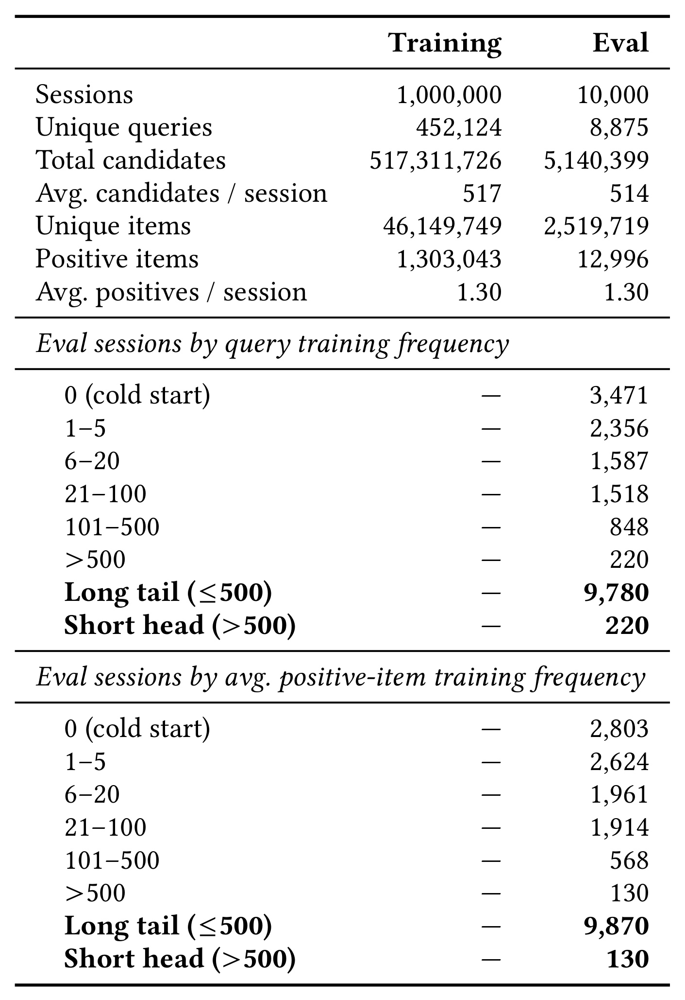
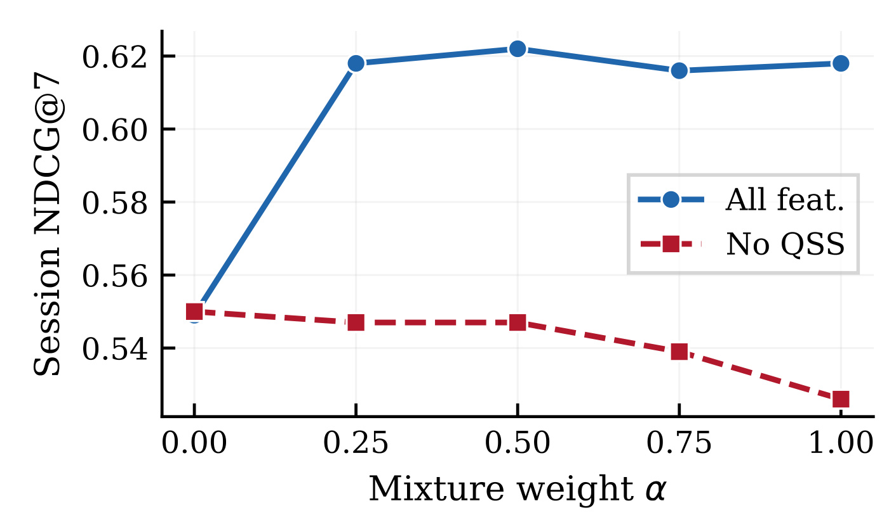
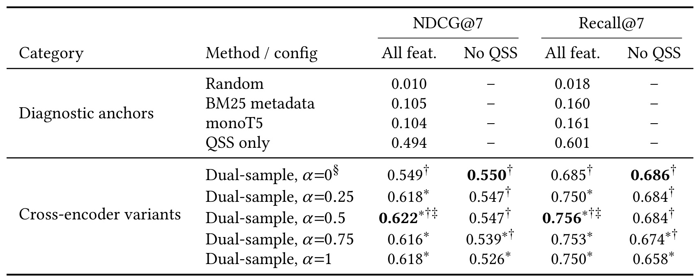
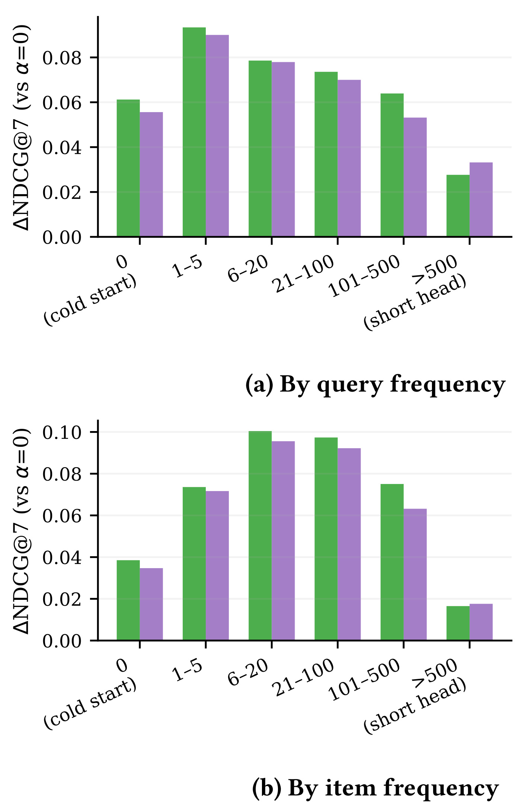
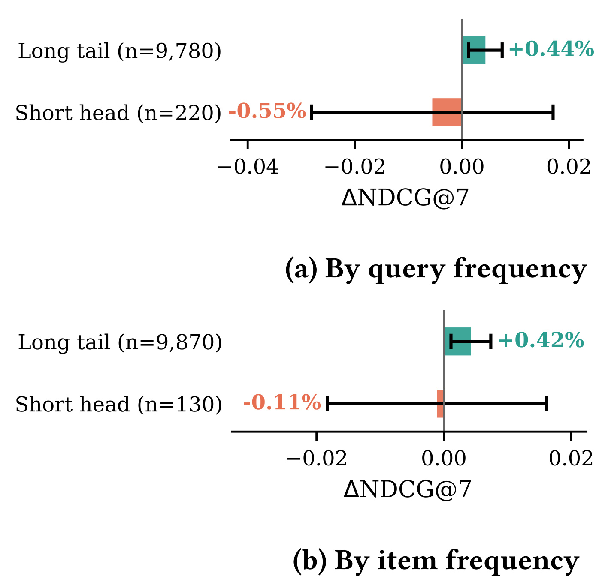
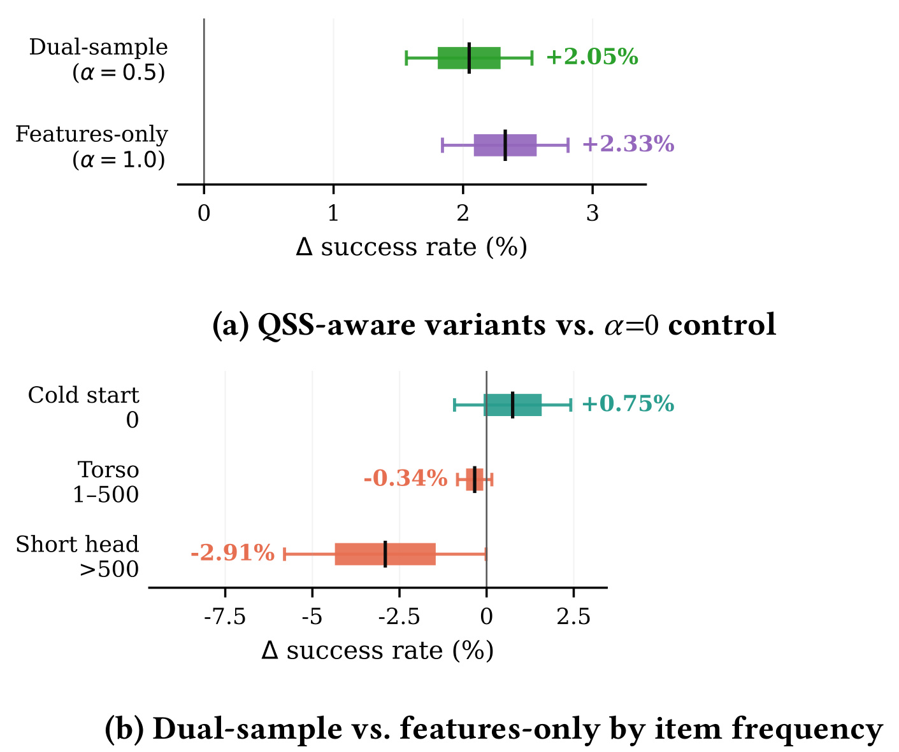

RobustQSS：让 LLM 重排利用行为统计而不过度依赖它
论文：Robust Fusion of Semantic and Behavioural Signals for LLM Reranking in Personalised Search。作者与机构：Aleksandr V. Petrov、Nathan Stein、Erik Lybecker 等，Spotify；前三位作者同等贡献。公开时间：2026 年 9 月 22 日，arXiv v1；公开页面注明为 RecSys 2026 的 USRW workshop 论文，不应写成主会论文。阅读日期：2026 年 9 月 25 日。来源：arXiv 论文入口。本轮未核验到独立公开代码或数据入口，实验来自平台内部日志。
把历史行为统计直接注入重排提示能够改善排序，但模型可能过度依赖这些统计，因而没有充分学到可泛化至稀疏或未见搜索的语义与用户上下文模式。
1. 背景和问题
1.1 个性化搜索同时需要明确意图与集体经验
Spotify 的个性化搜索面对的不是一个查询对应一段标准答案的简单匹配问题。用户输入查询后，候选可能来自音乐、播客、有声书等内容，具体实体还包括歌曲、艺人、专辑、歌单、播客节目与单集。同一个查询可以有多种合理意图，用户最近听过什么、所在市场和语言环境都可能改变相关性的判断。例如，对“健身歌单”这样的查询，文字高度匹配的候选未必最适合当前用户；历史收听偏好能够帮助系统选择风格更贴近用户的内容。另一方面，如果大量处于相同国家的用户对某个查询总是选择同一候选，这种集体交互经验又是很强的证据，完全抛弃它同样会损害体验。
传统工业排序模型通常把这些信息拆成自然语言、类别、连续数值和交叉统计等特征，再通过专门的结构融合。交叉编码器提供了一条更统一的路线：将查询、用户上下文、候选元数据以及行为特征放进同一段提示，由语言模型联合处理。它省去了为每种字段分别设计融合模块的部分工作，也使候选标题与用户历史能够在同一次计算中交互。但“能够写进提示”只解决了接口问题，没有回答模型最终会依赖哪类输入。一个字段如果高度预测标签，就可能让模型走捷径，以历史统计替代更困难的语义和个性化推断。
本文把这个矛盾落在一个明确的工业特征上：Query Slice Stats，简称 QSS。平台的统计存储支持多种切片，但本文实际研究的是查询、候选物品和用户国家三者组合的历史搜索成功率。它描述同一切片过去有多大比例的搜索产生了成功交互，而不是当前用户对该物品的个人偏好值。成功交互可以是播放歌曲、关注艺人或把播客加入资料库。区分集体统计与个人偏好很重要：模型同时输入了用户历史，不代表 QSS 自身已经个性化；本文也没有独立消融用户上下文，所以不能把所有收益归结为个性化建模能力增强。
1.2 统计特征越有效，缺失时越可能暴露学习偏差
QSS 的优势与脆弱性来自同一个来源：它依赖重复的历史观测。高频查询与热门物品有足够行为记录，统计往往能迅速指出高成功率候选；新内容、罕见查询以及没有足够交互的组合则缺少这样的证据。论文报告的评估集包含大量长尾流量，查询有超过三分之一在训练期间未出现过，因此缺失不是一个偶然的异常分支，而是系统常态的一部分。模型如果只在统计齐全的输入上学习，测试时遇到不存在的字段就可能失去最熟悉的判断依据，剩余的标题、查询和用户上下文又没有得到足够训练。
需要把两种实验情境分开。自然缺失意味着现实中没有可靠 QSS；人为删除意味着对同一评估样本故意去掉 QSS 字段，其他输入保持不变。本文的主要诊断采用后者，这让不同模型在相同候选、相同标签上接受一致压力测试，能够直接观察对该字段的依赖程度。但人为删除并不等价于真实冷启动：冷启动还伴随候选内容、语义分布和用户需求的变化；统计陈旧、统计噪声以及只有一部分字段缺失又是另外的情况。因此去特征表现只能提供一个可控的鲁棒性证据，不能直接替代所有线上缺失场景。
作者使用“捷径学习”解释总指标改善与去特征退化并存的现象。这里并没有测量隐藏层里究竟保留了多少语义知识，也没有证明模型完全忽视用户历史。证据更具体：始终带 QSS 训练的模型，在完整提示上优于不带 QSS 的模型；把 QSS 删除之后，前者反而低于后者。这样的交叉结果说明监督训练形成了对统计字段的脆弱依赖。将它表述为“去特征条件下泛化受损”是稳妥的；进一步声称语言理解能力退化或所有个性化能力丢失，都超出了实验直接支持的范围。
1.3 论文的贡献是可控训练与成对评测
本文没有设计新的注意力结构，也没有提出比现有重排器更大的基础模型。它选择保持同一个约六亿参数交叉编码器，通过训练数据的成对构造控制对 QSS 的依赖。每个带标签样本出现两次：一次保留统计字段，一次删除统计字段，二者共享相关性标签。这样，参数既获得利用集体经验的梯度，也持续获得在没有该经验时依靠其余输入的梯度。部署时只需一次模型前向，不要求再运行一个冷启动兜底模型，因此方法的吸引力主要来自训练改动小、上线接口稳定，以及诊断逻辑清楚。
更值得借鉴的是作者没有只看一个完整输入下的平均数，而是把完整提示、删除 QSS、频次分层、线上总体和线上冷启动切片放在不同层面比较。总量回答特征有没有业务价值，去特征实验回答模型是否形成脆弱依赖，频次切片回答损益落在谁身上，线上测试再检查离线变化是否对应真实成功交互。各层证据不能互相替代：离线最好的混合权重不保证线上显著最好，线上两个实验组都胜过对照也不代表二者互相存在显著差异。本文最终留下的是一个明确但有限的结论：成对去特征有助于保留 QSS 收益，同时减少缺失条件下的退化；线上已经确认的是 QSS 的总体价值，双样本相对始终带特征训练的冷启动优势仍需更强检验。
对工业团队而言，这种设定还区分了“增加信息”和“改变学习分配”两件事。加入 QSS 提供了额外观测，双样本训练则没有新增任何线上信息，只改变同一标签怎样作用于不同输入。因而评价创新时应分别考察统计特征本身的价值、训练日程的增量和额外计算代价。只有比较同一特征、同一检查点下的不同训练方案，才能判断鲁棒性来自哪一项，而不是把所有收益归给一个新名称。
2. 方法
2.1 交叉编码器与提示组成
模型从一个 PLUM 风格、约 0.6B 参数的预训练检查点出发，词表扩展了由平台交互数据构建的 Semantic ID。排序是逐候选的二分类：一个查询与一个候选组成一个输入，模型同时读取用户上下文，预测该候选是否满足当前搜索。第一阶段检索负责提供候选，本文只改变第二阶段的评分与排序。Semantic ID 让目录实体身份能够与自然语言元数据共同进入模型，但这不意味着本文在做自回归生成候选列表；输出依然是单个相关性标签，而后按分数重排已有候选。

Figure 1 是原文的提示组成示意，图中文字属于被框出的原始图对象。它从上到下把证据分为三组：语义组包括查询文本、候选标题、创作者、内容类型和 Semantic ID；用户上下文组包括国家与最近交互的 Semantic ID；行为组包括流行度档位以及 QSS 成功率档位。最后一行是相关性决策，即候选满足搜索时预测 Y。这个信息流解释了为什么同一个交叉编码器可以融合检索和推荐信号：查询明确当前意图，候选描述提供内容依据，历史行为与国家信息补充用户背景，而集体统计提供重复交互形成的经验。三组信号在输入层汇合，并没有在图中经过独立门控器，也没有显式标出哪组证据在什么情况下更可信。
图中把 QSS 与流行度放在同一行为组，但本文的去特征操作只针对 QSS，其他字段并不一并移除。因此无 QSS 视图仍然可能利用流行度、Semantic ID 中的交互信息和最近历史，不能称为纯文本模型。图示也明确只是生产提示的概括，真实提示还有额外字段和格式；没有公开完整模板时，不能把这四行当作可直接复现的线上输入协议。它的设计价值在于固定了成对样本的边界：同一候选、同一查询、同一用户上下文和相同目标标签，在两个视图之间都保持一致，仅 QSS 这一统计证据有无发生变化。读者由此可以理解后续损失为什么是在控制依赖，而不是重定义任务。与此同时，这个接口仍允许不同字段相互替代，实验所测的是删除一个特征族后的系统表现，无法据此断言模型已经学到独立、充分且可解释的语义决策过程。
2.2 QSS 的切片、分桶和缺失语义
平台底层特征库保存物品、查询、查询与物品、查询与物品与国家等多种切片上的计数、点击率和搜索成功率，成功率原始表示采用基点范围。本文选取其中的查询—物品—国家成功率，再根据历史特征分布的百分位数将连续值划为五个有序档位，从 very_low 到 very_high。提示中使用候选级的 success_rate 字段承载这个档位。这样做的目的，是让语言模型通过粗粒度文本标记感知统计强弱，而不是直接处理长尾计数或高精度连续小数。论文没有给出各百分位阈值与全部平滑细节，所以这种表示可以复刻，具体生产特征不能仅凭正文完全恢复。
缺失值处理是方法的一部分：没有可靠数值时，被视为未知并从提示中省略，而不是强行写成最低档。未知与低成功率具有不同含义，前者缺证据，后者有证据但结果不好。把二者混为一谈会使新物品被系统性当作差物品，也会改变论文所描述的去特征任务。为了生成配对样本，应直接删除 QSS 字段，而不是置零、换成最低档或在网络隐藏状态中随机清零。自然本来就没有 QSS 的样本可能产生相同或近似相同的两个视图，实际有效扰动比例因特征覆盖而变化；论文没有完整报告这部分分布，复现实验需要额外记录。
这种粗分桶统一了输入形式，却没有自动解决统计可靠性问题。一个档位可能来自不同观测量，历史统计也可能已经过时；如果没有把置信度、样本量和新鲜度共同输入，模型无法只靠档位知道它有多可信。本文采取的是更朴素的办法：不为每个样本估计可信度，而是让模型在训练期间始终练习不依赖该字段的任务。它适合验证“特征存在时能否利用、特征消失时是否仍能工作”，对“特征存在但错误时如何识别”则没有直接机制。这个差别决定了后续的鲁棒性结果不能泛化为对噪声、陈旧值或分布突变的统一保证。
2.3 标签监督与确定性双样本训练
原文首先采用标准标签位置交叉熵。提示被分词后，因果语言模型在末尾预测 Y 或 N；只有相关性标签位置计算损失，提示内容本身不承担重建目标。
符号解释：$x$ 是结构化提示，$\mathbf s=(s_1,\ldots,s_T)$ 是提示对应的 token 序列，$T$ 是序列长度，$y\in\{\mathrm Y,\mathrm N\}$ 是相关性目标，$p_\theta$ 是参数为 $\theta$ 的语言模型条件概率，$\mathcal L_{\mathrm{SFT}}$ 是单个输入的监督损失。
该目标使模型直接学习与搜索成功标签相关的判断，不需要新增专门的评分头，也不要求生成解释。推理使用 Y 在决策位置的对数概率，原文以文字给出的打分方式可写为：
符号解释：$r_\theta(x)$ 是当前查询—候选输入的重排分数，$\mathrm Y$ 是“相关”标签 token，$\mathbf s$ 是提示序列，$p_\theta$ 与训练目标中的模型相同。对候选按该分数降序排列；取对数不改变概率的排序顺序。
核心修改作用于训练输入。完整提示记为正号视图，匹配的负号视图只删除 QSS；两者仍共享同一个标签。负号表示缺少特征，不表示该样本是负例。原文的第二个编号公式为：
符号解释：$x^+$ 是包含 QSS 的完整提示，$x^-$ 是只去掉 QSS 的匹配提示，$y$ 是二者共享的标签，$\alpha\in[0,1]$ 控制完整视图的损失权重，$1-\alpha$ 控制去特征视图的权重，$\mathcal L_{\mathrm{mixture}}$ 是联合训练目标。
每个样本的两种输入都接受监督，让模型既学习使用强统计，也学习在统计缺席时完成同一判断。权重为零时退化为从不使用 QSS 的训练，为一时退化为始终带 QSS 的训练，中间值在两种任务之间分配梯度。这里没有约束两个预测必须相等，也没有教师蒸馏或额外一致性距离；正确标签分别约束两次前向结果。因而模型仍可在有统计时改变判断，只要两个条件都能优化各自的相关性损失。
确定性成对计算需要额外训练工作，而服务只运行实际输入的一次前向，不需要同时评估两个视图。作者提到共享前缀计算或 KV 缓存可能减少训练开销，但没有给出已实现的加速测量，因此不能把潜在优化写成实测低成本。普通随机 QSS dropout 则每次只抽取一种输入，在期望暴露比例上，删除概率对应混合权重的补数；它的梯度方差、同一步两种视图的覆盖以及总前向预算与确定性方法并不相同。论文提及单独的随机删除扫描，未提供能够建立两种日程优劣的匹配统计对照，所以贡献应表述为把成对去特征目标明确化和验证其有效性，而不是发明全新正则原理或全面胜过随机 dropout。
3. 实验结果
3.1 数据与评测口径

Table 1 给出了本文的基本任务难度。训练集有一百万个搜索会话，评估集一万个会话，分别来自不重叠时间段；日志整体收集跨度为两周。训练集含约四十五万独立查询和四千六百多万独立候选物品，候选出现总次数超过五亿。这里“独立候选物品”不等于正反馈物品数量，表中正例总数仅约一百三十万。评估集平均每会话约五百一十四个候选、一点三个正例，说明这是在大候选集合内把少数成功交互提升到前排的任务，而不是几十个均衡类别的分类。时间不重叠减少了直接复用同一时期会话的风险，但本文没有完整给出 QSS 特征的构建时间窗口和快照规则，因此还不足以独立审计所有统计穿越风险。
表格后两部分按查询训练频次与平均正例物品训练频次分桶。查询冷启动会话有三千四百七十一条，查询长尾占九千七百八十条；物品切片长尾占九千八百七十条。头尾分界都是训练出现五百次，但两个切片的统计对象不同。正例物品冷启动指没有正例训练出现，脚注强调它仍可能曾作为不相关候选进入训练；因此不能把这些物品全部解释为模型从未见过的全新实体。还有一个应保留的原文不一致：正文称头部正例物品会话占百分之一点六，表格列出一百三十条，占一万会话应为百分之一点三。本文采用表格计数，不自行推测哪个统计步骤造成差异。稀疏性的总体判断不受这个小差异影响，但按切片人数计算置信区间时必须使用明确口径。
主要指标是按会话计算再取平均的 NDCG@7 和 Recall@7，截断七来自生产界面不滚动即可看到的结果数。前者同时关注相关结果的位置，后者关注正例覆盖。统计检验使用会话级配对 t 检验，显著性阈值为零点零五。模型均从相同的 PLUM 风格检查点开始，训练一轮，批大小为四，学习率为万分之一，使用预热—稳定—衰减调度与梯度裁剪。论文没有系统比较多个随机种子和训练预算归一化后的方差，这意味着表内显著性主要是同一训练结果在评估会话上的差异，不应当成所有训练随机性都已覆盖。
3.2 暴露权重与去特征压力测试

Figure 2 的横轴是完整视图损失权重，纵轴是会话平均 NDCG@7。蓝色实线表示使用完整提示的评估，红色虚线表示在评估时统一去掉 QSS。两条曲线的分离是全文最直观的诊断：从从不带 QSS 的训练走向少量接触 QSS，完整提示表现迅速提高；继续提高暴露比例，完整提示曲线基本进入平台区，去特征曲线却不断下降。具体而言，权重从零增到四分之一，蓝线从零点五四九提高到零点六一八，已经恢复大部分统计收益；权重二分之一达到零点六二二。之后权重四分之三和一并未继续提高，说明在这个训练设定下，始终保留统计并不是利用统计的必要条件。
红线反映的是另一个问题。二分之一权重下无 QSS 的 NDCG 为零点五四七，与从不带 QSS 训练且同样去特征评估的零点五五零相比，配对检验未发现显著差异，作者给出概率值零点一五。权重为一时降至零点五二六，显示明显脆弱性。这里“未显著不同”不等于经过等效性检验证明完全保留能力，也不能推出所有潜在流量上都不退化；它表示当前样本和检验下没有足够证据拒绝无差异。更精确的读法是，适中的双视图训练在该评估集上同时保留高完整输入分数与接近基线的去特征分数。两条曲线也提醒部署者，权重是业务条件相关的折中参数，不能因二分之一在这张图最佳，就把它固定成所有统计特征、所有缺失率和所有训练预算的普适最优值。
3.3 离线主结果与基线含义

Table 2 按诊断参照与同检查点交叉编码器变体分成两组，每组报告完整提示和去 QSS 两种条件下的 NDCG 与 Recall。随机排序只有零点零一左右的 NDCG；仅用候选元数据的 BM25 与 monoT5 分别约零点一零五与零点一零四。QSS 单独排序已达零点四九四，说明这个字段本身携带很强预测信号，足以成为训练捷径。可是这些文字模型没有按生产任务充分调参，论文明确将它们作为词法或预训练文本参照，不是有竞争力的完整工业基线。因此不能把这组差距概括为 LLM 优于传统排序几十倍，也不能据此声称个性化搜索已不再需要语义。QSS-only 仍低于最好的交叉编码器零点六二二，差值零点一二八，说明其他输入与联合建模仍有明显作用。
最重要的比较发生在同一组交叉编码器内部。二分之一权重完整输入的 NDCG 为零点六二二，对比权重零的零点五四九是相对提升百分之十三点三；权重一的零点六一八对同一基线提升百分之十二点六。两者不是两个同等的“加特征收益”数字，更不能把十三点三误写成双样本相对始终带特征的增益。删除 QSS 后，二分之一权重为零点五四七，权重一为零点五二六，前者相对后者约提高百分之四，正是鲁棒性结论的主要量化依据。Recall 也呈现相同方向：二分之一权重完整输入达到零点七五六，去特征为零点六八四；权重一分别为零点七五零和零点六五八。表中星号比较对零权重，剑号比较对一权重，双剑号比较 QSS-only，不能把所有标记读成对所有模型都显著优越。表底还提示零权重模型在完整输入时遇到未训练过的 QSS token 会受到噪声影响，因此它的完整输入和去特征分数有微小差别；线上对照使用无 QSS 提示，避免了这项噪声。
3.4 频率切片中的分布差异

Figure 3 的两个子图分别按查询频次和正例物品频次，将评估会话分成零、一至五、六至二十、二十一至一百、一百零一至五百以及超过五百六档。纵轴是相对于零权重模型的 NDCG 绝对增量，绿色为双样本二分之一权重，紫色为始终带特征；图的颜色说明原来位于图注，这里在正文补充。它不是各档绝对 NDCG，也不是相对提升百分比，所以柱高不能直接与下一张图标注的百分数比较。查询零频次档，作者描述绿色增量约零点零六一、紫色约零点零五五，两者差距远小于各自相对基线的总提升。主要收益来自加入统计和联合输入，双样本带来的是在此基础上进一步改变损益分布。
两幅子图支持一个一致但不应过度解释的趋势：除最头部外，绿色通常高于紫色，说明持续练习无 QSS 视图对稀疏与中频区域更有帮助；最头部统计最充分，始终接触统计的训练则可竞争或略占优势。物品图在一百零一至五百档出现更明显的柱差，但没有给每个细档完整置信区间，因此不能据此声称该档一定是稳定最优干预目标。查询冷启动也不保证候选物品没有历史，物品冷启动也不保证查询不存在过，两种切片测量的是不同稀疏来源。进一步说，QSS 是三元切片的成功率，而这里按查询或正例物品的边际训练频次分桶；边际高频并不严格等同于每一个查询—物品—国家组合都可靠。这些切片是有解释力的代理变量，不是对每条 QSS 质量的直接测量。若想把训练权重改成按置信度自适应，仍需补上实际覆盖率、统计量与特征新鲜度的分析。
3.5 长尾增益与置信区间

Figure 4 将细粒度频次合并为长尾与头部，比较对象也从“分别减去零权重基线”变为“二分之一权重减去一权重”。横轴展示 NDCG 差值，图上百分数是作者给出的相对变化标注，误差线为百分之九十五置信区间。查询长尾共九千七百八十个会话，相对增益为百分之零点四四，区间从零点一二到零点七五；物品长尾九千八百七十个会话，相对增益百分之零点四二，区间从零点一一到零点七四。两者区间下界为正，支持当前离线样本下存在小但可测的额外收益。这与主结果中较大的十三点三必须分开：后者主要是 QSS 感知模型对无 QSS 训练的收益，这里才是双样本对始终带特征的增量。
头部查询点估计为负百分之零点五五，头部物品为负百分之零点一一，作者均未检出显著差异。图中头部误差线明显更宽，与查询仅二百二十个会话、物品仅一百三十个会话相一致。由此不能说成对训练“无代价地提高所有切片”，也不能说它已经造成可靠的头部损害；正确结论是头部结果尚不精确。由于长尾占该离线样本的大多数，总指标会很大程度受到长尾变化影响，这不意味着任意线上采样权重下总收益相同。工程上这张图更适合用于定义下一次实验的检测目标：分别确定头部允许损失、尾部希望检测的最小改善以及足够样本量，而非仅依据当前点估计做频次路由。论文保持一个统一模型，若进一步给头尾不同训练权重或服务策略，将引入新的选择偏差与维护成本，属于尚未验证的扩展。
3.6 在线验证与统计功效

Figure 5 的上半部分比较两个 QSS 感知实验组与无 QSS 对照，纵向列出双样本和始终带特征，横轴是搜索成功率相对变化。双样本提高百分之二点零五，始终带特征提高百分之二点三三，二者相对对照都显著改善。下半部分改为直接比较双样本与始终带特征，并按展示物品频次分层，三个点估计分别是冷启动正百分之零点七五、中段负百分之零点三四、头部负百分之二点九一。粗线是一倍标准差区间，细线为两倍标准差区间，统计按用户级搜索成功率计算；这与离线会话级 NDCG 的指标、单位和检验对象都不同。不能把线上百分之二与离线十三点三相除，得到某种固定的离线到线上转化系数。
对这组证据最容易出现的误读，是因为双样本在离线最好，就把线上试验也写成双样本显著胜出。论文明确指出两个 QSS 感知组之间未达到显著差异，甚至一倍标准差区间已有重叠。线上可靠支持的是注入行为统计对总体搜索成功有价值，而不是已经确定双样本训练是最优业务选择。冷启动方向与离线结果相符，但实验原本为总体成功率效应设计，未针对细粒度频次切片提供充分统计功效；作者自己要求方向性解读。冷启动正百分之零点七五不能写成已证实的收益，头部负百分之二点九一也不能脱离区间宣布稳定损害。这些点估计更适合为下一次扩大样本的分层试验提供假设。
线上分桶还有一项实质口径变化：每次搜索按展示物品中最大的训练频次归类，离线则按正例物品的频次统计。线上冷启动意味着展示集合在该定义下均处于零频次，而离线可能只看最终成功的正例；线上头部只要出现高频展示物品就可能被归入。排序方法自身也可能改变展示集合，使切片归属与干预后结果相关。因此两套切片不能视作同一人群的重复测量，论文的定性一致性不能替代口径对齐的因果验证。还应注意搜索成功是由平台交互规则定义的短期信号，并未直接测量长期满意度、内容发现多样性或新创作者生态收益。作者提到改善新内容可发现性是合理方向，但当前数据没有直接给出这些长期目标的验证。
4. 总结
4.1 我的判断
这篇工作的价值在于把一个很常见、却容易被总体收益遮盖的问题变成了可实验检验的命题：强统计进入语言模型后，究竟是与语义互补，还是使剩余信号训练不足。最有说服力的证据是同检查点、同候选集下完整输入提升与删除字段退化同时发生，以及双视图训练将后一种退化明显缩小。方法简单并不降低这类诊断的价值，但也不应将其包装成全新的大模型架构。对实际重排项目，首先复制成对评测，往往比直接复制某个混合权重更有信息量。
4.2 局限与复现重点
第一，数据、完整提示和 QSS 构建规则来自单一平台，公开材料无法恢复全部训练条件，迁移收益仍未验证。第二，删除一个字段族只是极端压力测试，没有覆盖值仍存在但噪声增加、统计过时和多特征相关失效；这些情况对模型可能更难。第三，随机去特征的对照没有统一计算预算与匹配统计证据，不能断言确定性双样本是最省算力或最优日程。第四，训练代价只定性增加，没有延迟、吞吐、显存与共享前缀节省量的实测，服务路径不变不代表整个迭代免费。第五，线上细分流量统计功效不足且切片定义不同，冷启动优势尚不能作为确定的上线承诺。第六，用户上下文没有独立消融，不能把去 QSS 后的稳定表现单独归因于个性化能力提高。
复现时应先固定特征快照与缺失语义，确保完整和删除视图只有一个字段差异，标签、候选顺序与用户历史完全一致。其次同时记录完整输入、自然缺失与统一删除的指标，避免把压力测试当成真实流量。还应按训练样本数和模型前向数分别对齐随机与成对删除，让收益与额外计算的来源能够区分。对零正例训练频次的物品，单列其作为负候选的曝光历史，才能明确是交互冷启动还是实体冷启动。
此外，需要保留正负候选采样规则与曝光位置的信息。日志中的成功交互会受旧排序策略影响，即便训练与评估时间分开，也不能自动消除展示偏差。本文未用随机曝光实验单独估计这些偏差，复制方法时应避免把未交互候选无条件视为真实不相关。
4.3 后续跟进
值得优先跟进三项实验。其一，围绕 QSS 的观测量、新鲜度和覆盖率构造连续退化测试，判断成对删除是否也能处理“有值但不可信”，因为这是当前方法没有直接识别机制的风险。其二，开展按用户预先固定分层、为尾部效应设计功效的线上试验，同时观察头部护栏，减少展示集合变化造成的切片偏差。其三，比较多统计字段共同或分别删除、置信度门控与自适应权重，确认改进到底来自更多训练样本、单一特征正则还是更普遍的稳健融合。
对推荐系统，本文提示历史点击率、成功率等强交叉特征需要和泛化特征共同验收，缺失质量应有独立指标。对 LLM 应用，同样可以把检索分数、外部记忆置信度或工具统计看作可能形成依赖的提示字段，但这只是迁移假设；它们与 QSS 的标签关系及噪声结构不同，需要重新构造可保持真实标签的成对视图。不能为了去特征而删除决定任务真值的信息，否则同标签监督本身就会矛盾。只有当剩余输入仍足以支持合理判断时，本文这种训练约束才有清晰意义。